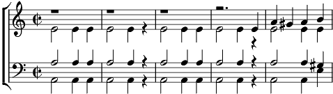

1. Dans cette vie, Dans cette vie, Dans cette vie
Livrons-nous au changement.
Goût qui nous lie n'est pas vif s'il est constant.
Prenons de l'amour et du vin,
Changeons en du soir au matin,
C'est le plus doux destin bis
2. Me voit paraître, Me voit paraître, Me voit paraître
Avec l'air trist' ou chagrin
Je voudrais être partout où l'on boit du vin.
En buvant de ce jus divin
Du bonheur nous sommes certains
En noyant le chagrin bis